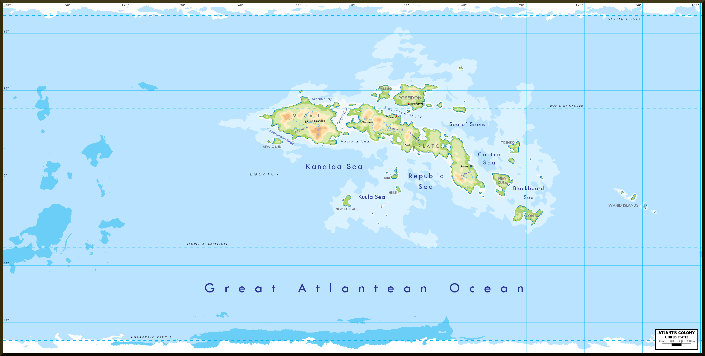

| Atlantis Territories |
||||||
|---|---|---|---|---|---|---|
|
||||||
| Anthem: "The Star-Spangled Banner" | ||||||
 |
||||||
| Capital and largest city | Theseus | |||||
| English (de facto) | ||||||
| Government | United States Territory | |||||
| Population | ||||||
| - | 2160 estimate | 653,000 | ||||
| Currency | United States dollar ($) (USD) | |||||


Atlantis is the second planet orbiting Alpha Centauri B in the Alpha Centauri System. The planet is named after the ancient lost city described by Plato; it is also referred to as Terra Nova, or the Ocean Planet. Although Atlantis is primarily covered by water, its only native life-forms (asides from two kingdoms of plant-like autotrophs) are microbial. Since the first researchers arrived in 2063, the planet grew to a population of over 653,000 people boosted by the Terran diaspora.
History[]
Prior to human contact, Atlantis had no sign of large macroscale life, and its surface only exhibited sparse signs of simple species of microbial life.
First Settlers[]

Atlantis in 2063, before terraforming began.
Faster than light travel, the long dreamed-of miracle of physics and engineering was realized in 2061 with the launch of the Prometheus, the first probe fitted with a White-Alcubierre drive. The technology had been discovered just before the outbreak of the World War III, at NASA Ames Research Center. After the war, NASA began applying new techniques in Quantum navigation developed during the war to guide a potential ship to another solar system. In 2057, Congress approved funding for the Prometheus. Its 2061 launch gave humans the first close-up look at a the Alpha Centauri system, discovering a small water covered world around Alpha Centauri B. The planet displayed little signs of life beyond the microbial, furthering the theory that Oxygen really is a universal demand for complex biological systems. Further exploration by the Enterprise in 2063 revealed a world that would be relatively easy to terraform, requiring no injection of heat or foreign elements to jumpstart the planet's habitability.
The planet that would be known as Atlantis, had an atmosphere rich in Nitrogen, Argon, and CO2, and an very acidic ocean. Terraforming would not begin until the late 2070s, and would be limited by the constraints of warp field volumes which forced larger ships to take much slower sub-luminal journeys to and from the Solar system to Atlantis. O'Neil Ships were built to hold ecosystems that could develop on the long journey to Atlantis, depositing blooms of genetically modified microbes, plants and eventually animals. The effort to colonize Atlantis has been hindered by the lack of demand for such a world. By the 2080s, Mars was taking in the bulk of colonists from Earth, leaving Atlantis to only a small population of fortune seeking pioneers. As of 2140 only about half a million residents, mostly from Polynesia and the Gulf of Mexico reside on the planet. Terraforming is set to be completed by 2160, but even with the delivery of colonists via the massive O'Neil ship Hydra, it is unlikely that Atlantis's population will rise above a few million residents for many decades.
Atlantis's native life-forms are of little interest to most people outside of academia. However, in preparation for the terraforming of the planet, a collection of genetic samples and cultures of every known species on the planet was assembled in one of the research stations. Since the composition of the ocean was changed as part of the terraforming process, it was considered impractical to release the native life-forms back into the wild. As of 2160 the only native Atlantean life forms in existence are cultured specimens maintained for research purposes.
Nemo Station Incident[]
While complex animal-like organisms were absent on Atlantis, there were a number of multicellular plant-like life forms. Probably the best-known of these was Hydromycidium mucophilis. The name is inaccurate, since the organism is not a true fungus. Hydromycidium, like most autotrophs on Atlantis, reproduces by releasing millions of tiny "spores" into the air which begin growing upon contact with moist surfaces. As an extremely hardy species which needs little more than a moist surface in order to grow, Hydromycidium can take root in virtually any environment-- including the mouths, noses and throats of human colonists. In most cases, due to the differences in biochemistry, this did not have any ill effects for the humans aside from being rather uncomfortable. At least, that was thought to be the case before the Nemo Station Incident.
In 2081, a group of scientists of the research station Nemo near the Amphitrite region hoped to use this "fungus's" attraction to moist surfaces to help automatically resolve respiratory problems to dissolve certain harmful substances such as lung fluid, mainly in newborns, without manually removing lung fluid through genetic modification. The intent was for the fungus to absorb moisture that would otherwise build up in the human respiratory system, thereby making breathing easier.
An incident occurred in 2083 when several scientists alerted officials after developing severe difficulty breathing. As it turned out, the warm, moist environment of the human nose and throat had accelerated the Hydromycidium's growth to an alarming degree, causing the human victims to suffocate. As soon as machines detected foreign contagions, the scientists were procedurally quarantined and were tested positive for infection. After a few days, most of the infected scientists were dead and spores were released. One of the rooms had an overlooked damaged ventilation system, allowing the fumes to spread around the facility and infected most of its inhabitants. A distress call was sent to the nearby settlement of Amphitrite. Fearing further spread of infection, Atlantis' Planetary Guard forces were called to destroy the station via orbital bombardment. All 1,080 known inhabitants of the station were labeled presumably dead shortly after.
Shortly after the incident, terraforming crews released a genetically modified virus (created from a species found native on the planet) designed specifically to destroy the "fungus" on the planet to avoid another incident, despite its unmodified version being generally harmless. Today, the only live samples of the Hydromycidium still in existence belong to laboratory specimen collections. Later professionals picked up on research conducted by the late group of scientists. Despite the failure of research, the incident had provided greater understanding of extraterrestrial genetics on the planet.
Terran Diaspora[]
Colonization of Atlantis was considered a long term, even fanciful project prior to advancements made in gravity propulsion during the Third Mexican War. Modifications made to existing O'Neil ships and next generation warp-capable spacecraft increased the rate of colonization considerably, while the stars of Alpha Centauri have become prime candidates for the construction of additional Dyson Spheres.
Government and Politics[]
Government[]
Political Divisions[]
Atlantis is a US planetary territory of only 3 organized territories. The single member districts of each state are drawn according to algorithmic appropriation of representation based on population.
| # | Territories | Capital | Ratification‡ or Admission | Preceding Entity |
|---|---|---|---|---|
| 1 | Mizon | New Baghdad | March 9, 2137 | Atlantis Territory |
| 2 | South Poseidon | Amphitrite | March 9, 2137 | Poseidon Territory |
| 3 | Theseus | Theseus | July 7, 2143 | Plato Territory |